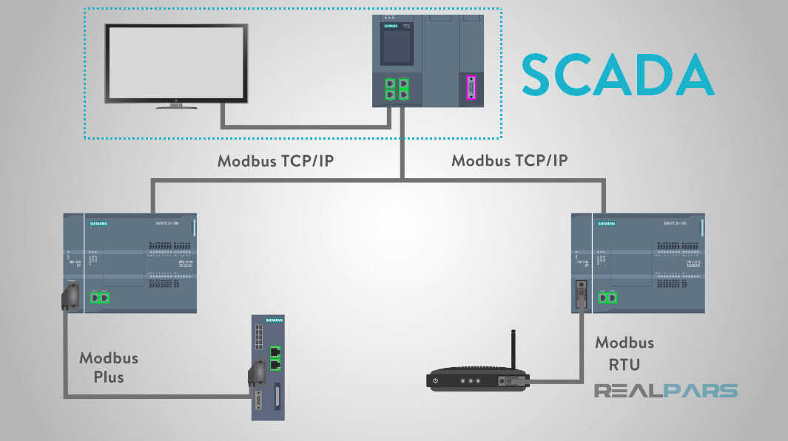

Ipari kommunikációs és SCADA rendszerek I.
Ez az oldal az Ipari kommunikációs és SCADA rendszerek I. című tantárgy tematikáját tartalmazza.
Feladata és célja:
A kommunikációval, kommunikációs rendszerekkel kapcsolatos alapismeretek elsajátítása. A vezetékes ipari kommunikációs rendszerek megismerése.
Tematika
- Bevezetés az információ‐ és kódolás elméletbe.
- Adatátviteli és kommunikációtechnikai ismeretek.
- Az adatátvitel elméleti alapjai, fizikai jellemzők, vonali kódolás, szinkronizálás, protokoll.
- Hibavédelmi kódolás.
- Átviteli közegek, zajok, zavarforrások.
- Kommunikációs hálózatok, kapcsolási módok, LAN topológiák.
- OSI referencia modell.
- Az adatkapcsolati réteg funkciói.
- A hálózatok összekapcsolásának elemei.
- Modemek és multiplexerek.
- USB kommunikáció.
- Ipari kommunikációs rendszerek története és fejlődése.
- CAN busz.
- Devicenet és Controlnet.
- Létesítményautomatizálási hálózatok (EIB).
- Soros kommunikációs szabványok: RS‐232, RS‐422, RS‐423. RS‐485.
- A MODBUS protokoll. PROFIBUS DP. AS‐I interfész. Az Interbus kommunikációs rendszer.